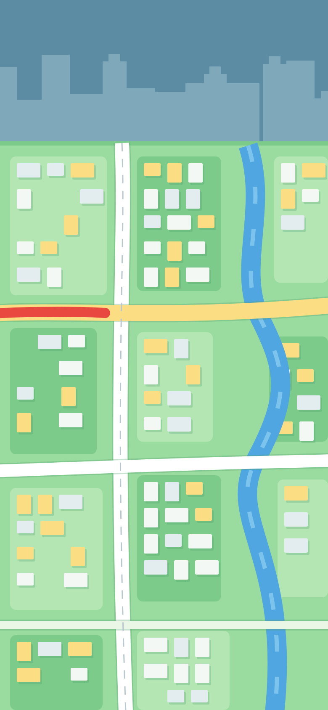

Hanapin ang lugar
Lampas
Malapit na
Ayon sa plano
Di kumpirmado
14
Aguinaldo Hwy
6
Salawag Rd
3
Paliparan III
2
Burol Main
1
Governor's Dr
Tingnan ang listahan
Aguinaldo Hwy
Lampas 30 araw
Simula
Scan
Mapa
 Aguinaldo HwyLampas 30 araw
Aguinaldo HwyLampas 30 araw
Aguinaldo HwyLampas 30 araw
Aguinaldo HwyLampas 30 araw